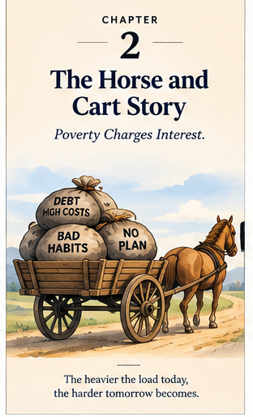

Discover the book
Explore the author’s journey and the framework behind this companion.
Explore the book →A book. A learning journey. A practical next step.
Understand where your money goes, reduce the load, and build a stronger financial foundation—one thoughtful decision at a time.
The interactive companion to Abdullah Mohiuddin’s Personal Finance Story: From Fighting Affordability to Generational Wealth.

Choose a way in
Begin with the story, follow the visual course, or explore an idea using a fictional example.
Explore the author’s journey and the framework behind this companion.
Explore the book →Nine chapter-based modules with visual slides, exercises and action plans.
Browse the course →Make ideas tangible through games, activities, a financial reset report and calculators.
Choose a tool →From statements to a next step
Explore a fictional report first. See the money-spiral assessment, expense-by-four-pillars table, support opportunities, emergency readiness and prioritized actions.
Small experiments, useful questions
Translate a price into gross earnings and working hours, using clearly stated assumptions.
Explore the true cost →Map what takes money away and what brings it back, then compare a decision’s outcomes.
Try the activity →Follow the book’s roll-and-decide game through a simulated lifetime.
Play the game →Learn about Abdullah Mohiuddin and the lived experiences that shaped the book.
Meet the author →Explore a proposed learning session for your workplace or community, and prepare an inquiry.
Explore workshops →